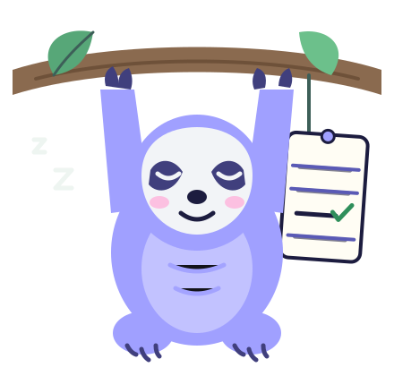

A small, local-first app
Do less, on purpose.
I made this to help me decide what needs attention, what can wait, and what I can let go. Paste in a task list and a small model running on your computer sorts it into four groups.
- Runs on your machine
- Your list never leaves it
- Safety net for money, health and promises

How it works
Three steps, none of them hard.
-
Paste the whole mess
Bullets, numbers, checkboxes and headings all work. Duplicates are merged and anything already ticked off is skipped.
-
A model on your machine judges
For each task it first writes what realistically happens if you ignore it, then picks a bucket. Dates are worked out by code, never guessed.
-
A safety net catches the scary ones
Money, paperwork, health, safety, promises and people can never silently expire. You always get the last word, and the model learns from your corrections.
The four buckets
- Do now
Ignoring it costs you soon, or it takes under ten minutes.
- Do later
It matters, but nothing breaks this week.
- Let it expire
Nothing bad happens if it never gets done.
- Not my problem
It belongs to someone else, or you are waiting on them.
Questions
Things you might be wondering.
Still curious? The whole app is plain Python and plain JavaScript, small enough to read over a weekend.
Does my list leave my computer?
No. The app listens only on 127.0.0.1, talks only to the model server on your own machine and bundles its own fonts. There are no accounts, analytics or cloud calls. If you point it at a model server on another machine it asks you to confirm first.
Which models work?
Anything served through Ollama, llama.cpp’s llama-server, LM Studio or vLLM. A small model is plenty: Gemma 3 4B or Qwen 2.5 are good places to start (ollama pull gemma3:4b). Settings has a Test connection button that checks your setup in about ten seconds.
What if the model gets it wrong?
It will, sometimes. That is why money, paperwork, health, safety, promises and people can never be let go silently, why every card says why it landed where it did, and why every task has a Move button. Skipped tasks come back for a check-in (did it cost you anything?) and your regrets are fed back to the model as examples next time.
What is the keyword demo?
If no model is running you can still try the app. It sorts with a handful of keyword rules. That is not AI, and every list it makes says so.
Where is my data kept?
In plain JSON files in the data folder next to the app. Open them, back them up or delete them. Settings also has a Forget everything button.
Why a list of things I will not do?
Because every to-do list only ever grows. Deciding what not to do is the part nobody does on purpose, and it is where most of the time you get back comes from.